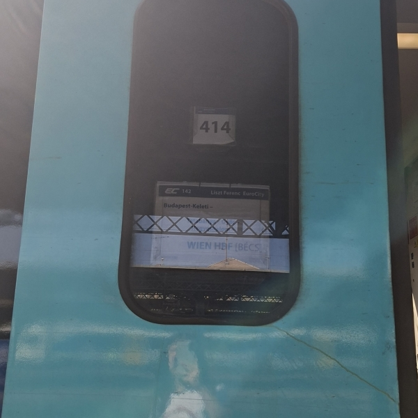
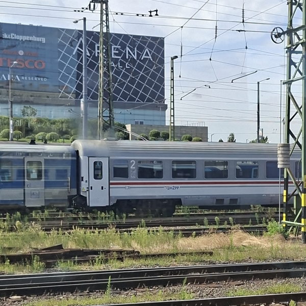
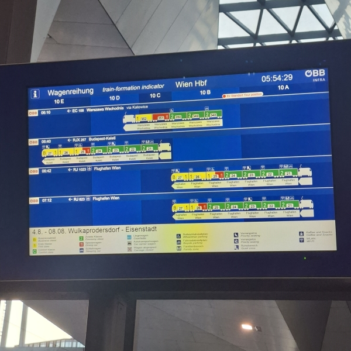
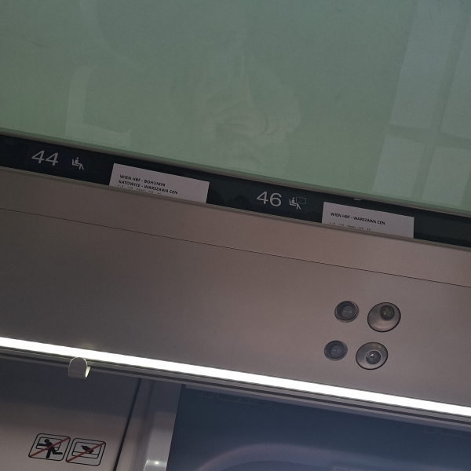
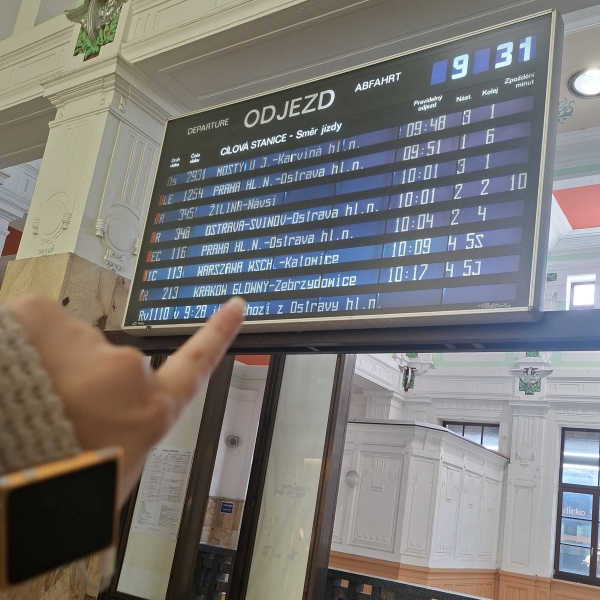
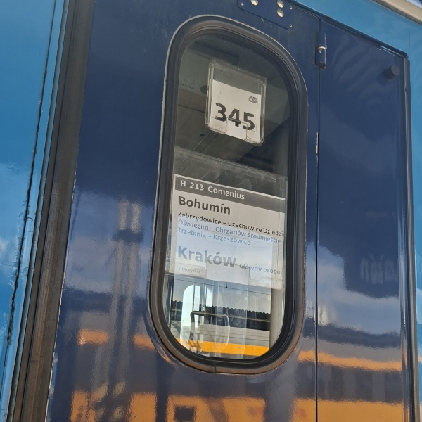
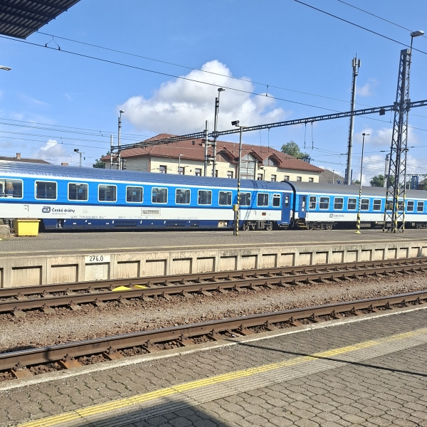
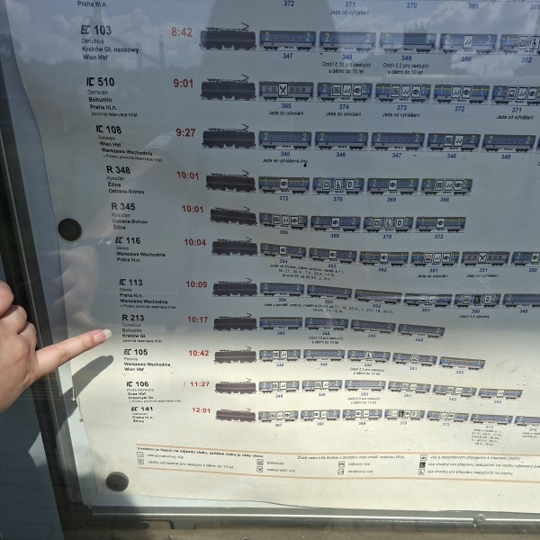
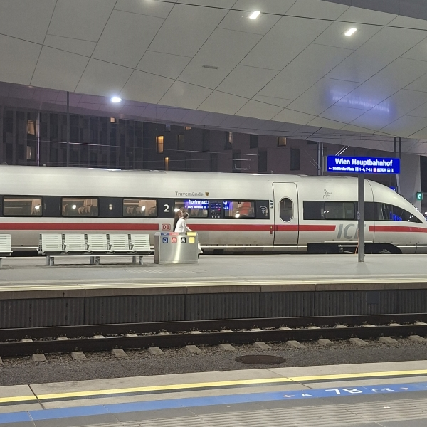
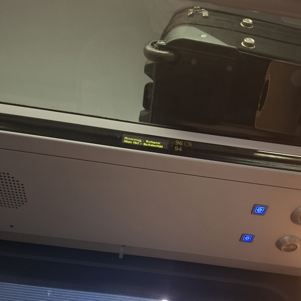

Vienna and Kraków - August 2025
As far as I recall, this was the first I travelled somewhere by train entirely alone! It was a pretty exciting trip too, as I had visited Poland for the first time ever.
Travel path
- Early morning departure from Slavonia toward Pécs, Baranya county, Hungary
- Pécs to Budapest-Kelenföld (western train station of Budapest) InterCity train
- Budapest-Kelenföld to Wien Hbf by ÖBB Railjet, arriving in the early afternoon
Day trip to Kraków:
- Leaving from Wien Hbf early morning toward Bohumín, operated by České dráhy
- Bohumín to Kraków Główny, arriving a little after noon, likewise operated by České dráhy
And the return from Kraków:
- One simple overnight České dráhy service directly from Kraków Główny to Wien Hbf.
Return to Croatia:
- Early morning departure from Wien Hbf once again with ÖBB Railjet to Budapest-Kelenföld
- Budapest-Kelenföld to Pécs
- Pécs to Beli Manastir passenger train, arriving early in the afternoon
What I did in Vienna and Kraków
I was away for a week total in the first week of August, and made a small day trip to Kraków, spending the rest of the time in Vienna. Travelling excites me, and I also enjoyed seeing all the different trains in a whooping FIVE countries! List as follows:
- An ÖBB Nightjet all the way from Paris had a (fortunate for me) one hour delay, and I happened to run right into it as it pulled into Wien Hbf. I was not even aware that this 17-or-so-hour service existed, and I was so surprised that I did a double take upon seeing it on the big timetable screen!
- Countless ÖBB-operated Railjet services
- A Deutsche Bahn ICE train at Wien Hbf that I suspect had come from Nürnberg Hbf
- LEO Express owned Stadler FLIRT in Bohumín
- A couple of Arriva trains - in Croatia, Arriva only operates buses!
- The beautiful Alstom New Pendolino for PKP InterCity at Kraków Główny
- Many RJX and S-Bahn trains at Wien Hbf and all throughout the city
- Randomly spotted HŽPP compartment and sleeper wagons at Budapest-Keleti. A small taste of home!
- A RegioJet engine-pulled train in Bohumín
Photo gallery









